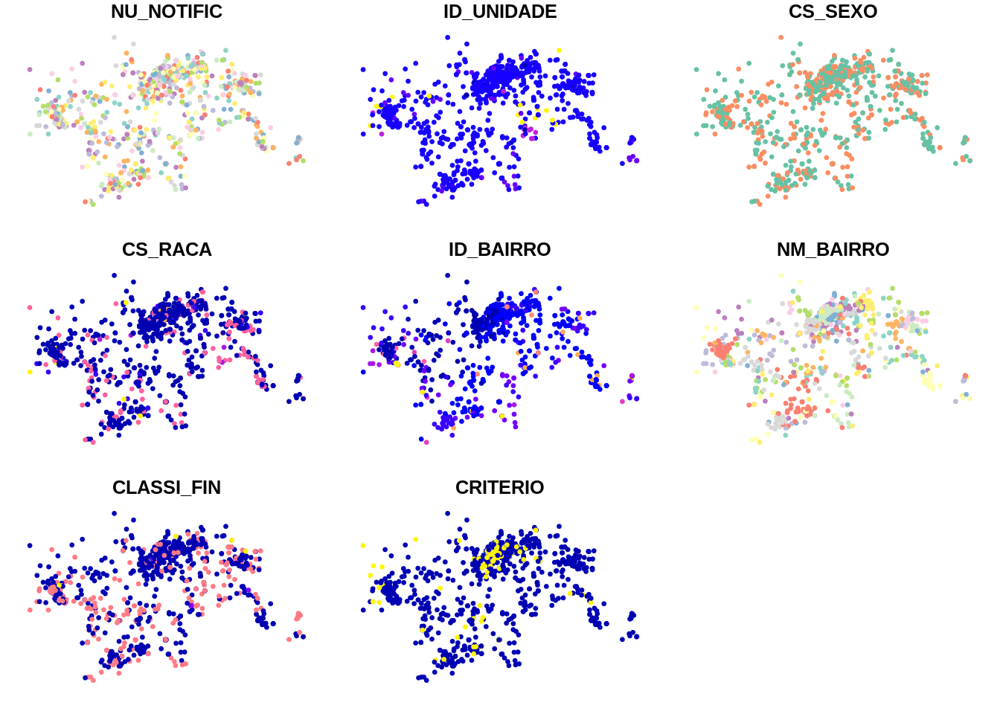
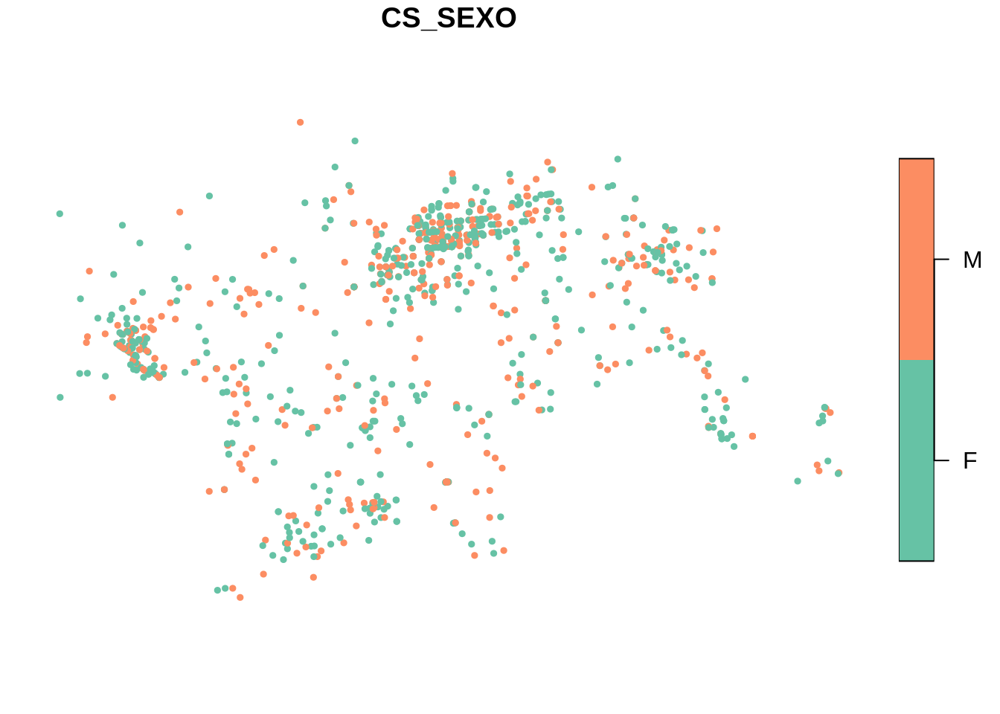
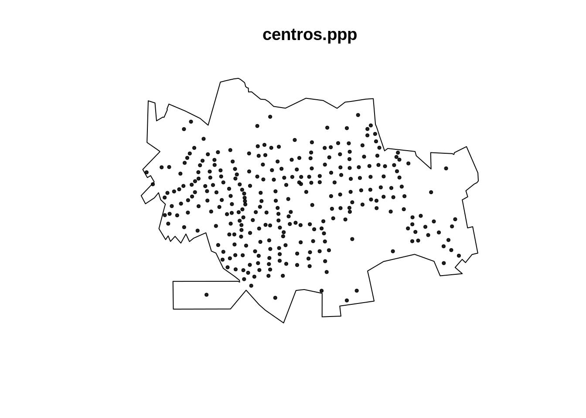

8 Padrões Pontuais II
8.1 Exemplo com os dados de dengue em Dourados/MS
Nesta aula serão utilizados os dados da monografia de Isis Rodrigues Reitman, apresentada ao Curso de Geografia da Faculdade de Ciências Humanas da Universidade Federal da Grande Douradosos/MS, em março de 2013. O título da monografia é “DISTRIBUIÇÃO ESPACIAL DOS CASOS DE DENGUE NO PERÍMETRO URBANO DE DOURADOS-MS E SUA RELAÇÃO COM OS FATORES SOCIOAMBIENTAIS E POLÍTICOS”
ATENÇÃO ATENÇÃO ATENÇÃO
Devido a maneira que o Windows acessa as url usando a internet é necessario mudar a opção default dele para que possa usar apropiadamenet os recursos https, ftps, etc… A linha abaixo deve ser utilizanda antes de usar as funções que acessam esse tipo de recurso.
Lendo a tabela da população por setor censitário e baixando os shapes files do contorno e por setor censitário de Dourados/MS
local <- 'https://gitlab.procc.fiocruz.br/oswaldo/eco2019/raw/master/dados/'
pop2010 <- read_csv(paste0(local,'pop2010.csv'))
tmpdir <- tempdir()
download.file(paste0(local,'setores_dourados.zip'),
destfile = paste0(tmpdir,'/dourados.zip'))
unzip(zipfile = paste0(tmpdir,'/dourados.zip'),exdir = tmpdir)
dir(tmpdir)
setor <- read_sf(paste0(tmpdir,'/Setor_UTM_SIRGAS.shp'), crs = 31981)
contorno <- read_sf(paste0(tmpdir,'/contorno.shp'), crs = 31981)
popsetor <- setor %>% mutate (idsetor = as.numeric(CD_GEOCODI)) %>% inner_join(pop2010,by='idsetor') [1] "contorno.dbf" "contorno.sbn"
[3] "contorno.sbx" "contorno.shp"
[5] "contorno.shx" "dourados.zip"
[7] "Setor_UTM_SIRGAS.dbf" "Setor_UTM_SIRGAS.prj"
[9] "Setor_UTM_SIRGAS.sbn" "Setor_UTM_SIRGAS.sbx"
[11] "Setor_UTM_SIRGAS.shp" "Setor_UTM_SIRGAS.shx" - Lendo e plotando os casos de dengue georreferenciados em Dourados/MS
casos <- read_csv(paste0(local,'dengue_dourados.csv'))
casos.pt <- st_as_sf(casos, coords = c("X", "Y"), crs = 31981)
plot(casos.pt[-3],pch=19,cex=0.5) ## remove dataPlotando os casos de dengue segundo o sexo.

Plotando apenas o contorno de Dourados/MS.

Usando a ggplot() para fazer um gráfico do contorno e dos casos.

Formatando os pontos que representam os casos de dengue na classe ppp (point pattern)
cont.w <- as.owin(as_Spatial(contorno))
dengue.ppp <- ppp(casos$X,casos$Y,cont.w)
plot(dengue.ppp,pch=19,cex=0.5)
Uma vez que temos o objeto em formato ppp, podemos verificar a melhor largura de banda sugerida por vários métodos disponíveis pela biblioteca spatstat para os casos de Dengue em Dourados/MS.
| Nome | Comando R | Resultado |
|---|---|---|
| Diggle | bw.diggle(dengue.ppp) | 14.1335 |
| Cronie and van Lieshout’s (CvL) | bw.CvL(dengue.ppp) | 1630.7311 |
| Scoot | bw.scott(dengue.ppp) | 771.6202, 467.906 |
| likelihood cross-validation | bw.ppl(dengue.ppp) | 178.0477 |
Existem ainda outros métodos para determinar automaticamente a largura de banda. É possível usa-los para ajudar a escolher o melhor valor, mas é preciso verificar se essa largura de banda apresenta plausibilidade dentro do contexto do estudo.
Fazendo o mapa de kernel dos casos de dengue segundo várias larguras de banda.
par(mfrow=c(2, 2))
plot(density(dengue.ppp,250,diggle = TRUE),main='kernel 250 m',col=terrain.colors(64))
plot(density(dengue.ppp,500,diggle = TRUE),main='kernel 500 m',col=terrain.colors(64))
plot(density(dengue.ppp,750,diggle = TRUE),main='kernel 750 m',col=terrain.colors(64))
plot(density(dengue.ppp,1000,diggle = TRUE),main='kernel 1000 m',col=terrain.colors(64))
Fazendo o kernel segundo sexo, criando padrões para cada sexo e em seguida gerando um kernel para cada categoria.
masc <- casos %>% filter(CS_SEXO=='M')
masc.ppp <- ppp(masc$X,masc$Y,cont.w)
fem <- casos %>% filter(CS_SEXO=='F')
fem.ppp <- ppp(fem$X,fem$Y,cont.w)
D.masc <- density(masc.ppp,750,diggle = TRUE)
D.fem <- density(fem.ppp,750,diggle = TRUE)
par(mfrow=c(1, 2))
plot(D.masc, main='kernel Homens 750 m')
plot(D.fem, main='kernel Mulheres 750 m')Fazendo a razão de kernel entre os sexos.
Como podemos observar no kernel acima, não foi detectada variabilidade espacial na razão entre os sexos. Observe o efeito de borda que ocorre no Norte, onde um único indivíduo do sexo masculido é responsável pelo efeito de borda.
Extraindo os centróides dos setores censitários de Dourados/MS.
centros <- st_centroid(st_geometry(popsetor) )
centros.tmp <- as.data.frame(as_Spatial(centros))
names(centros.tmp) <- c('X','Y')
centros.ppp <- ppp(centros.tmp$X,centros.tmp$Y,cont.w)
plot(centros.ppp,pch=19,cex=0.5)
Fazendo o kernel dos pontos dos centróides dos setores censitários de Dourados/MS. Tal distribuição, pode se sugerida como uma proxy da verdadeira distribuição populacional de Dourados/MS

Gerando um kernel de atributo com a população de cada setor censitário. O parâmetro weights nos permite entrar o valor do atributo a ser ponderado. Desta forma é possível gerar um kernel de um valor especificado (atributo).
Calculando a taxa média de casos (por 1.000 hab) de dengue do município de Dourados/MS
[1] 5.853
Gerando a razão de kernel (casos/população) x 1000
kcasos.b750 <- density(dengue.ppp, 750, diggle = TRUE)
razao <- kcasos.b750
razao$v <- (kcasos.b750$v / kpop$v)*1000
plot(razao, main='Razão de kernel casos/população')
contour(razao, add=T, levels=seq(0, 25, by=5))Plotando a distribuição das taxas por dengue estimadas via razão de kernel. É possível verificar que a mediana das razões de kernel é bem próxima a taxa média de casos (por 1.000 hab) em Dourados/MS.
boxplot(as.numeric(razao$v), col='green', main='Boxplot da razão de kernel')
abline(h=mean(as.numeric(razao$v), na.rm=T), lty = 3, col="red")
Sobrepondo a malha da população por setores censitários (dados de área) com os pontos de casos de dengue (padrões pontuais)
p1 <- ggplot(popsetor) +
geom_sf(aes(fill=pop)) +
geom_sf(data=casos.pt,color='white',size=0.7) +
theme_void()
print(p1)
Razão de casos confirmados vs não confirmados
Como verificamos abaixo temos 713 casos confirmados de Dengue e 304 não confirmados , será que existe algum padrão espacial para os casos não confirmados ?
FALSE TRUE 304 713
Para visualizarmos vamos inicialmente criar dois objetos do tipo ppp uma para confirmados e outro para não confirmados.
Confirm <- casos %>% filter(CLASSI_FIN == 1)
NaoConfirm <- casos %>% filter(CLASSI_FIN != 1)
Confirm.ppp <- ppp(Confirm$X,Confirm$Y,cont.w)
NaoConfirm.ppp <- ppp(NaoConfirm$X,NaoConfirm$Y,cont.w)plot(st_geometry(contorno))
points(Confirm.ppp,pch=19,cex=0.5, col="red")
points(NaoConfirm,pch=19,cex=0.5, col="blue")
title("Distribuição dos casos Confirmados e Não Confirmados")
legend("topright", legend=c("Confirmados", "Não Confirmados"),
col=c("red", "blue"), pch = 19, cex=1,
title="Legenda", bg='lightblue')Em seguida vamos fazer um kernel para cada um deles.
D.confirm <- density(Confirm.ppp,750,diggle = TRUE)
D.naoconfirm <- density(NaoConfirm.ppp,750,diggle = TRUE)
par(mfrow=c(1, 2)) #,mar=c(0.5,2,1,1.5))
plot(D.confirm, main='kernel casos Dengue 750 m',box=FALSE)
plot(D.naoconfirm, main='kernel casos Descartados 750 m',box=FALSE)
Aparentemente existem diferenças nos padrões dos casos confirmados e descartados de dengue. O próximo passo é fazer uma razão de kernel para averiguar essa diferença de padrões.
raz <- D.confirm
raz$v <- D.confirm$v / D.naoconfirm$v
plot(raz,main='Razão Dengue Confirmado Vs Não Confirmado',box=FALSE)A razão não evidencia grande diferença, por que ?
Qual seria a melhor maneira de evidenciar essa diferença ?
8.2 Modelos Generalizados Aditivos (GAM)
- Um modelo aditivo generalizado (Hastie and Tibishirani, 1990) é um modelo linear generalizado com um preditor linear envolvendo a soma de funções suavizadas das covariáveis + os efeitos fixos das mesmas.
\[\eta = \sum X \beta + f_1(x_{1i}) + f_2(x_{2i}) + \ldots\]
8.3 Modelos Espaciais Generalizados Aditivos
- São modelos aditivos generalizados tendo como um dos preditores o efeito suavizado das componentes espaciais.
\[\eta = \sum X \beta + f_1(x_{1i}) + f_2(x_{2i}) + f_3(latitude_{i}, longitude_{i}) + \ldots\]
Exemplo GAM Dourados - Tipo Caso/Controle
Vamos ajustar um modelo GAM do tipo “caso/controle”, onde casos serão representados pelos casos de dengue confirmados e controles os casos não confirmados.
casos.pt$X <- casos$X
casos.pt$Y <- casos$Y
grade <- expand.grid(X = seq(720900.6,734155.5,length.out = 150),
Y = seq(7535267.6,7544897.2 ,length.out = 100))
suppressMessages(library(mgcv,quietly = TRUE))
mod0 <- gam(CLASSI_FIN==1 ~ s(X,Y),data=casos.pt,family = binomial)Family: binomial Link function: logit
Formula: CLASSI_FIN == 1 ~ s(X, Y)
Parametric coefficients:
Estimate Std. Error z value Pr(>|z|)
(Intercept) 1.0069 0.0795 12.7 <2e-16 ***
—
Signif. codes: 0 ‘’ 0.001 ’’ 0.01 ’’ 0.05 ‘.’ 0.1 ’ ’ 1
Approximate significance of smooth terms:
edf Ref.df Chi.sq p-value
s(X,Y) 21.9 26.2 144 <2e-16 ***
—
Signif. codes: 0 ‘’ 0.001 ’’ 0.01 ’’ 0.05 ‘.’ 0.1 ’ ’ 1
R-sq.(adj) = 0.161 Deviance explained = 14.7% UBRE = 0.085615 Scale est. = 1 n = 1017
- Podemos observar que o modelo espacial vazio parace evidenciar que o componente espacial *s(X,Y) é significativo, ou seja, existe indícios que o espaço geográfico está influenciando a variável de desfecho.
Agora vamos verificar a saída gráfica original do modelo.
vis.gam(mod0, main = "Modelo Vazio", plot.type = "contour",
color = "terrain", contour.col = "black", lwd = 2)- Essa saída não parece ser muito intuitiva, apesar ser possível observarmos as áreas onte apresentão ‘pistas’ de haver um risco maior e as áreas onde estão mais isentas de casos de dengue.
Vamos agora tentar melhorar tal saída gráfica.
suppressMessages(library(splancs,quietly = TRUE))
suppressMessages(library(fields,quietly = TRUE))
TAM <- 400
caixa <- st_bbox(contorno)
grade <- expand.grid(x=seq(caixa[1],caixa[3],length.out = TAM),y=seq(caixa[2],caixa[4],length.out = TAM))
contorno.xy <- as.data.frame(slot(slot(slot(as_Spatial(contorno),"polygons")[[1]],"Polygons")[[1]],"coords"))
inside <- in.out(as.matrix(contorno.xy),as.matrix(grade))
outside <- list(x=seq(caixa[1],caixa[3],length.out = TAM),
y=seq(caixa[2],caixa[4],length.out = TAM), z=matrix(rep(0,TAM^2),ncol=TAM) )
outside$z[inside] <- NA
x <- outside$x
y <- outside$y
newgam <- data.frame(X=grade[,1],Y=grade[,2])
gg.pred <- predict(mod0,newdata=newgam, type="terms", terms="s(X,Y)",se.fit=T)
gg.pred$fit[inside==F]<-NA
gg.pred$se.fit[inside==F]<-NA
z <- exp(matrix(gg.pred$fit,TAM,TAM))
## a very rough estimate of confidence intervals
z.inf <- exp(gg.pred$fit + (1.96 * gg.pred$se.fit))
z.sup <- exp(gg.pred$fit - (1.96 * gg.pred$se.fit))
z.inf <- matrix(z.inf,TAM,TAM)
z.sup <- matrix(z.sup,TAM,TAM)
cores <- c("#053061","#2166ac","#4393c3","#92c5de","#d1e5f0","#f7f7f7","#fddbc7","#f4a582","#d6604d",
"#b2182b","#67001f")
split.screen(rbind(c(0,.8,0,1), c(.8,1,0,1)))[1] 1 2
screen(1)
image(x,y,z,zlim=range(z, na.rm=T), col=cores, asp=1, xlab="", ylab="", main="",axes=F)
#points(den$x_coord, den$y_coord, pch=19, col="blue", cex=0.1)
contour(x, y, z.inf, nlevels=1, add=T, col="blue", lwd=2, levels=1,cex=0.1,labels = '<1')
contour(x, y, z.sup, nlevels=1, add=T, col="red", lwd=2, levels=1,cex=0.1,labels = '>1')
splancs::polymap(contorno.xy,add=T,lwd=2)
screen(2) # The legend
#range(z, na.rm=T) # to make a pretty legend
#ticks <- seq(0,0.5,by=0.2)
ticks <- quantile(na.omit(as.vector(z)),prob=seq(0,1,by=1/3))
ticks <- seq(0,5,by=0.5)
image.plot(zlim=range(z, na.rm=T), col=cores, axis.args=list(at=ticks, labels=ticks),legend.only=TRUE, smallplot=c(.1,.25, .15,.85), legend.width=3, legend.shrink=.8, horizontal=F)
title("Modelo Vazio")Podemos também inspecionar a superfície do erro padrão do modelo.
[1] 3 4
screen(1)
image(x,y,z,zlim=range(z, na.rm=T), col=cores, asp=1, xlab="", ylab="", main="",axes=F)
splancs::polymap(contorno.xy,add=T,lwd=2)
screen(2) # The legend
#range(z, na.rm=T) # to make a pretty legend
#ticks <- seq(0,0.5,by=0.2)
ticks <- quantile(na.omit(as.vector(z)),prob=seq(0,1,by=1/3))
ticks <- seq(0,10,by=1)
image.plot(zlim=range(z, na.rm=T), col=cores, axis.args=list(at=ticks, labels=ticks),legend.only=TRUE, smallplot=c(.1,.25, .15,.85), legend.width=3, legend.shrink=.8, horizontal=F)
title("Erro Padrão - Modelo Vazio")Note que no centro, onde existe a maior qunatidade de pontos, o erro e bem menor que nas áreas onde existem menos pontos e nas bordas !
Incluindo no modelo a variável sexo.
Family: binomial Link function: logit
Formula: CLASSI_FIN == 1 ~ CS_SEXO + factor(CS_RACA) + s(X, Y)
Parametric coefficients:
Estimate Std. Error z value Pr(>|z|)
(Intercept) 0.9830 0.1097 8.96 <2e-16 ***
CS_SEXOM -0.0215 0.1530 -0.14 0.888
factor(CS_RACA)2 -0.6188 0.3746 -1.65 0.099 .
factor(CS_RACA)3 -0.2041 0.9833 -0.21 0.836
factor(CS_RACA)4 0.2949 0.2099 1.41 0.160
factor(CS_RACA)5 -0.5668 1.1361 -0.50 0.618
factor(CS_RACA)9 0.8469 0.8517 0.99 0.320
—
Signif. codes: 0 ‘’ 0.001 ’’ 0.01 ’’ 0.05 ‘.’ 0.1 ’ ’ 1
Approximate significance of smooth terms:
edf Ref.df Chi.sq p-value
s(X,Y) 21.8 26.2 143 <2e-16 ***
—
Signif. codes: 0 ‘’ 0.001 ’’ 0.01 ’’ 0.05 ‘.’ 0.1 ’ ’ 1
R-sq.(adj) = 0.162 Deviance explained = 15.2% UBRE = 0.094684 Scale est. = 1 n = 1011
Como já visto anteriormente na análise exploratória espacial de pontos, a variável sexo não é significativa significativa.
newgam <- data.frame(X=grade[,1],Y=grade[,2], CS_SEXO="F", CS_RACA="1")
gg.pred <- predict(mod1,newdata=newgam, type="terms", terms="s(X,Y)",se.fit=T)
gg.pred$fit[inside==F]<-NA
gg.pred$se.fit[inside==F]<-NA
z <- exp(matrix(gg.pred$fit,TAM,TAM))
## a very rough estimate of confidence intervals
z.inf <- exp(gg.pred$fit + (1.96 * gg.pred$se.fit))
z.sup <- exp(gg.pred$fit - (1.96 * gg.pred$se.fit))
z.inf <- matrix(z.inf,TAM,TAM)
z.sup <- matrix(z.sup,TAM,TAM)
cores <- c("#053061","#2166ac","#4393c3","#92c5de","#d1e5f0","#f7f7f7","#fddbc7","#f4a582","#d6604d",
"#b2182b","#67001f")
split.screen(rbind(c(0,.8,0,1), c(.8,1,0,1)))[1] 5 6
screen(1)
image(x,y,z,zlim=range(z, na.rm=T), col=cores, asp=1, xlab="", ylab="", main="",axes=F)
#points(den$x_coord, den$y_coord, pch=19, col="blue", cex=0.1)
contour(x, y, z.inf, nlevels=1, add=T, col="blue", lwd=2, levels=1,cex=0.1,labels = '<1')
contour(x, y, z.sup, nlevels=1, add=T, col="red", lwd=2, levels=1,cex=0.1,labels = '>1')
splancs::polymap(contorno.xy,add=T,lwd=2)
screen(2) # The legend
#range(z, na.rm=T) # to make a pretty legend
#ticks <- seq(0,0.5,by=0.2)
ticks <- quantile(na.omit(as.vector(z)),prob=seq(0,1,by=1/3))
ticks <- seq(0,5,by=0.5)
image.plot(zlim=range(z, na.rm=T), col=cores, axis.args=list(at=ticks, labels=ticks),legend.only=TRUE, smallplot=c(.1,.25, .15,.85), legend.width=3, legend.shrink=.8, horizontal=F)
title("Modelo ajustado por Sexo e Raça")8.4 Bibliografia sugerida
Wood, S.N. (2017) Generalized Additive Models: an introduction with R (2nd edition), CRC.